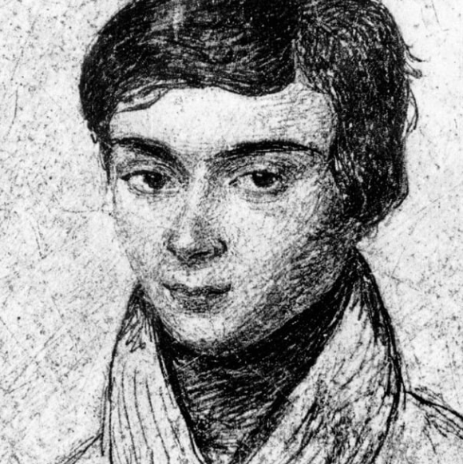

Évariste Galois : 3000 a.C.
La teoría de Galois estudia las simetrías de las soluciones de ecuaciones polinómicas y su relación con las extensiones de campo. Permite entender cuándo una ecuación puede resolverse con radicales y por qué algunas no pueden resolverse de esa manera.
Volver a la página principal